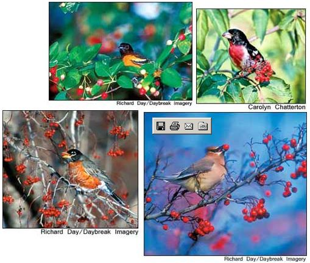
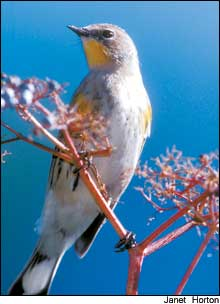

Bird Feeders With Roots
Plant these beautiful trees and shrubs in your back yard to attract birds and other wildlife.
By Terry Krautwurst
August/September 2005
Chances are, you’ve already taken backyard birds under your wing. You’ve put feeders out for them, and you keep those feeders stocked year-round with seeds and other treats. You conscientiously keep those feeders clean to prevent the spread of avian diseases. Maybe you even provide a source of fresh water for thirsty winged visitors.
Good for you. In all likelihood, your efforts have helped sustain the travels of countless feathered migrants, and also have helped foster a healthy bird population in your area. But there’s another sort of “feeder” that’s even more important to backyard birds. I’m talking about plants - a bird’s natural food source. Think of them as bird feeders with roots.
Food-bearing trees and shrubs provide birds with a varied and nutritious diet of nuts, berries and buds - the sustenance many birds rely on most. And because plants are home to insects and caterpillars, they serve as a sort of all-you-can-eat buffet for bird species that do not eat seeds. What’s more, trees and shrubs offer birds protection from predators and the environment; they serve as sites for rearing young; and, because they catch and hold rain and dew, they furnish drinking water.
You can do all this for birds merely by planting trees and shrubs in your yard that are both attractive to you and beneficial to them. Now’s the perfect time for planting - in most areas, late summer and early to mid-autumn generally bring sunny skies, pleasantly cool temperatures and rain in short but regular doses.
The Grand Plan
Whether you landscape your yard all at once or with just a few plants at a time, it makes sense to conceive some sort of overall design - if not on paper, at least in your mind. Consider your yard from a different perspective: from a bird’s-eye view. Planning a landscape becomes easier - and more fun - when one of your goals is to create an attractive environment for birds. Why? Because variety is the essence of good bird habitat. The greater the diversity of trees, shrubs and other vegetation, the more kinds of birds you’ll attract. As a bird-conscious landscaper, you can consider a wider range of trees and shrubs than you might otherwise contemplate.
On the other hand, not all the choices you’ll find at a nursery make good natural bird feeders. In fact, some of the most widely used yard trees and ornamental shrubs have the appeal of a 2-by-4 to passing birds. But many species that are beneficial to birds also are colorful and interesting to humans: flowering vines and hedges; lush, dense evergreens; plants bearing bright-hued berries. Add to that bright spectrum a healthy population of birds flitting to and fro, and your landscape literally comes alive.
Of course, if you grow your own fruits and vegetables you may not exactly relish the image of a yard flocked with feeding birds. Rest assured, though, that most fruit- and seed-eating birds strongly prefer natural, uncultivated food sources - trees, shrubs and vines - and generally come to gardens only to consume another favorite meal: insects. Robins, titmice, mockingbirds, bluebirds, nuthatches, cardinals and sparrows are examples of common garden visitors that almost never consume plants or vegetable crops; it’s the bugs they want. Crows and blackbirds that do raid gardens aren’t particularly influenced one way or the other by the landscaping choices you make. (You can, however, unwittingly attract them by putting out cracked corn and other large bird seeds in feeders.)
Another benefit of bird-conscious landscaping is that, in the process, you’ll likely create conditions attractive to other wildlife. Bees, butterflies, predatory wasps, toads and other beneficial critters know a good place when they see one, and they will take up residence along with your feathered friends.
You also might be able to find wildlife-friendly trees and shrubs for less than you would pay for the same plants at a nursery. In many areas, county and state agencies such as soil conservation offices, forestry services, and fish and wildlife departments administer programs that distribute low-cost or free food-bearing trees, shrubs and other landscape plants to landowners. Some programs are designed specifically for owners of large acreages; others are open to anyone. Contact your county’s agricultural Extension office to learn about programs in your area.
When choosing plants, remember to consider not only whether they produce nourishing fruits, nuts and buds, but also what time of year they produce them. Try to establish a sufficient variety of species to keep a steady supply of food coming year-round. (For a list of ideal plants and when they bear food, see “Great Plants for You and the Birds,”)
Serviceberry, for instance, yields fruit for songbirds as early as late March. Viburnums bear fruit from July through September; birch tree catkins produce edible seeds in late September; and holly berries offer sustenance from fall through the following spring.
Likewise, try to create a mixture of plant shapes and sizes.ifferent kinds of birds favor different kinds and levels of cover. Mix shrubs and small understory trees with taller trees, and fill open spaces with dense plantings of grasses and ground covers. Be sure to include both deciduous and evergreen trees and shrubs so that birds will have leafy shelter from the environment regardless of the season. Also, of course, you’ll want to keep in mind all the usual principles of good landscaping:
• Avoid creating beds with sharp angles or elaborate curves. Gentle curves look more natural and are easier to maintain.
• Choose plants that are appropriate to the soil and growing conditions. For instance, put shade-tolerant plants in shady places, and moisture-loving plants in wet areas.
• When positioning trees and shrubs, don’t be fooled by the sizes of young plants - ask about each species’ mature size and plant accordingly.
• Give extra thought to what your landscape will look like in the dead of winter. Evergreen trees and shrubs placed strategically can enliven an otherwise bleak snow-season yard. The bark and twigs of many deciduous trees also can add striking color and contrast. For example, beech has muscled, gray-colored bark.eep-red branches set off the red osier dogwood.
And remember that plant species native to your region generally provide the best food and cover for indigenous birds. Natives usually are better able to withstand your region’s climatic extremes, too. [For listings of plants native to your area, as well as suppliers, contact the Lady Bird Johnson Wildflower Center: (512) 292-4100; www.wildflower.org. - Mother
Finally, don’t forget to arrange your plantings so that you’ll be able to observe your winged neighbors.on’t block windows, porches and patios with tall shrubs or other growth. After all, the idea is to create a landscape that’s as useful and attractive to all its residents as it is to you.
Great Plants for You and the Birds
The trees and shrubs listed below are among those favored by many birds for food, shelter and nesting, and that are suited to most parts of the country with four distinct seasons. Your local agricultural Extension agent can help you choose additional wildlife-friendly species suited specifically to your area. Remember that variety is a key ingredient in providing good bird habitat; try to establish multiple layers of vegetation: tall trees, shorter understory trees and shrubs ranging from chest height to ground height. Most of the varieties listed can be planted in the fall; they’ll produce new roots until the ground freezes and then resume growth in the spring. (However, some trees prefer spring planting, such as dogwoods and certain oaks.)


|
 Top Left: Rose-breasted grosbeak with red elderberry..Top Right: Baltimore oriole with serviceberry .. Bottom Left: American robin with hawthorn berry bottom Right: Cedar waxwing with hawthorn berry |
 |
|